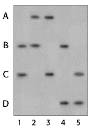

DNA Forensics Problem Set 2
Problem 9: Reconstructing a missing mother's profile
|
Forensic scientists from time to time must reconstruct the DNA profile for a missing person from analysis of DNA profiles of close relatives. In this case, a mother of four children is missing. All children have the same biological father. Results from a single locus probe DNA fingerprint analysis for the four children and their father are shown in the figure. Unfortunately, the forensic scientist forgot to label the lane with the father's DNA. Nevertheless, you are able to deduce that the alleles of the missing mother are: |
 |
A. B and CB. A and B
C. A and C
D. B and D
E. A and D
Lane 1 is the only lane that shares one band with all of the children. Therefore, lane 1 must be the father, with the alleles B and C. The mother must have contributed the alleles A and D to their children.


The Biology Project
University of Arizona
Tuesday, August 20, 1996
Contact the Development Team
http://biology.arizona.edu
All contents copyright © 1996. All rights reserved.